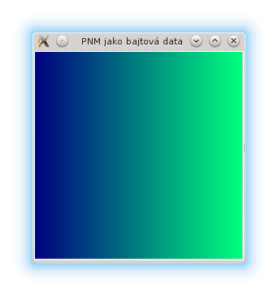
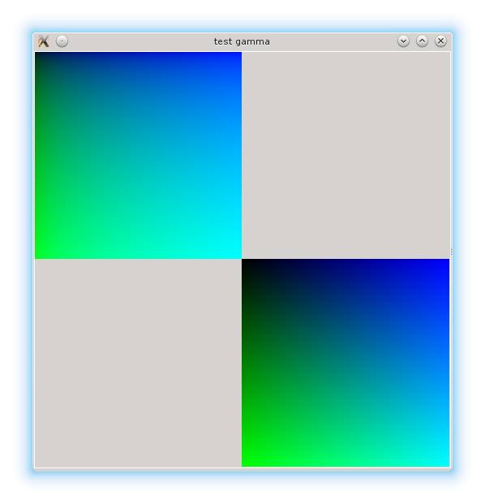
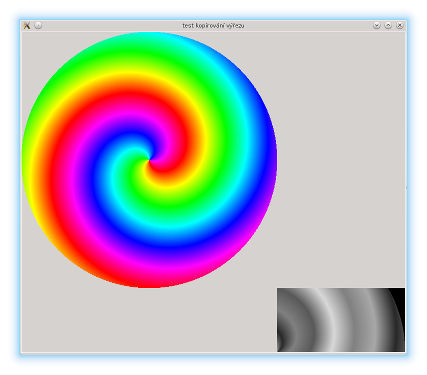

GUI – Tkinter a obrázky (GIF & PNM)
by Jiří Znamenáček
Úvod
PhotoImage jest jednou ze dvou tříd, které můžeme použít pro zobrazení obrázků na canvasu tkinterové aplikace. Konkrétně tato třída zvládá následující formáty:
- GIF;
- PNM, a to specificky pouze binární podformáty P5 (odstíny šedi) a P6 (standardní RBG).
Data obrázků je přitom možno načítat buď ze souboru nebo zadávat přímo jako bajtové sekvence (a v případě formátu GIF i jako BASE64-zakódované).
Obrázek ze souboru
Zobrazit na kanvasu obrázek ze souboru se zařizuje parametrem file:
from tkinter import *
root = Tk()
root.title('Obrázek ze souboru')
#photo = PhotoImage(file='duha-2.gif')
photo = PhotoImage(file='duha-2.ppm')
w, h = photo.width(), photo.height()
canvas = Canvas(root, width=w, height=h)
image = canvas.create_image((w, h), image=photo, anchor=SE)
canvas.pack()
root.mainloop()
{kind=link}
Jediné, na co nesmíte zapomenout, je poslat do metody create_image() rozměry obrázku, a to jako dvojici. U vlastního kanvasu to není až tak důležité, protože se v rámci možností přizpůsobuje. (Spíš by v tomhle případě byl zbytečně veliký.)
Obrázek jako bajtový řetězec
Úplně to samé platí pro obrázek z bajtového řetězce, jen se použije parametr data:

Pokud sestavíte validní bajtový řetězec (tedy typ bytes(), nikoli bytearray()!) obrázku, bude zobrazen stejně, jako kdybyste ho načetli ze souboru.
GIF jako BASE64-data
Zajímavou variantou – toho času ale pouze pro formát GIF – je načtení dat obrázku v podobě BASE64-zakódovaného řetězce:
Další vlastnosti
V oficiální dokumentaci k tkinteru se už o moc víc nedočtete, ale když se podíváte na vlastnosti tříd image a photo u dokumentace Tk, zjistíte, že s obrázky se dá docela slušně „řádit“. Ale to už předpokládá, že umíte „překládat“ dokumentaci pro jazyk Tcl na dokumentaci pro jazyk Python.
V dalším se na pár užitečných vlastností obrázků podíváme.
Gama-korekce
Světe div se, ale tkinter umožňuje u zobrazených obrázků měnit jejich jas pomocí gama-korekce:

Kopie obrázku „-copy“
Zobrazený obrázek můžete také zkopírovat do nového, a to dokonce pouze jeho výřez a ještě při tom změnit jeho velikost. Jediný zádrhel je, že příslušná metoda copy() v tkinteru umí pouze přesnou kopii, takže pro plnou funkcionalitu originálu si musíte odskočit do volání čistého Tk:
{kind=link}
Získání dat obrázku „-data“ & „put()“
Opět odskokem na přímé volání do Tk, protože uvedená metoda nemá v tkinteru vůbec ekvivalent, můžete také získat přímo RBG-data obrázku pomocí metody -data a ta dále použít (zde výřez v odstínech šedi):

Data výřezu jsou v tomto případě vrácena jako sekvence RGB-hodnot, které metoda put() dokáže rozkódovat a správně zobrazit.
Data pixelu „get()“
Jako poslední si ukažme ještě zjištění informací o konkrétním pixelu:
Nazpět se vrátí trojice představující postupně dekadickou hodnotu pro červenou, modrou a zelenou složku barvy na příslušných souřadnicích obrázku. A to jako jeden řetězec, tak pozor na to!